目前，Skyline 可以支持从多种全扫描质谱仪（如离子阱和 Q-TOF 仪器）的原始数据文件中提取基于色谱峰的定量测定的方法。与其对三重四级杆质谱仪的选择反应监测 (SRM) 的支持一样，Skyline 将继续为原有四家质谱仪供应商的仪器提供这些新分析方法的支持：AB SCIEX、Agilent、Thermo-Scientific 和 Waters。另外还有Bruker Q-TOF 质谱仪。Skyline对高分辨率和低分辨率质量分析仪均适用。
在本教程中，您将学习如何使用 Skyline 分析靶向 MS/MS 数据，这种方法亦被称为平行反应监测 (PRM)，还被称为伪 SRM 和 MRM-HR™。正如这些别名所提示的那样，靶向 MS/MS 是与三重四级杆质谱仪的 SRM比较相似的全扫描方法：
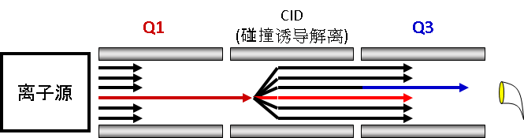
正如 SRM 扫描母离子和子离子对并分别采集它们在一个周期中的强度，靶向 MS/MS将扫描非数据依赖型母离子列表并采集其在一个周期中的完整 MS/MS 扫描。
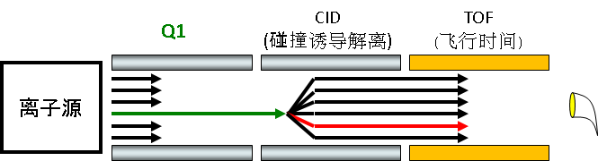
Skyline 对以这种方式采集的原始数据进行提取，获得时间-强度色谱图。
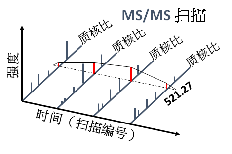
由此产生的色谱图提供的定量数据，与目前在Skyline 用户界面进行的三重四级杆SRM实验数据类似。
当类似仪器上的时间不可选时，靶向 MS/MS 可作为三重四级杆的替代。即便如此，这种靶向MS/MS 相比传统 SRM在选择性上有优势，并且可以进行数据库搜索，以帮助验证所提取的色谱峰。而且，靶向 MS/MS 也可用于对各种全扫描仪器进行质量控制，即使它们主要用于数据依赖型采集 (DDA)。这一质量控制方法将会单独在其他教程中进行介绍。本教程将探讨靶向 MS/MS 在低分辨率 Thermo LTQ 和高分辨率 Agilent Q-TOF 上进行靶向定量测定的用法。
如要开始本教程，请下载下列 ZIP 文件：
https://skyline.gs.washington.edu/tutorials/TargetedMSMS_2.zip
将其中的文件解压到您的电脑文件夹，如：
C:\Users\brendanx\Documents
这将创建一个新文件夹：
C:\Users\brendanx\Documents\TargetedMSMS
其中包含本教程所需的所有文件。在 Windows Explorer 中，导航至新的“TargetedMSMS”文件夹及其包含的子文件夹“Low Res”。双击文件“BSA_Protea_label_free_meth3.sky”，即可打开其中包含低分辨率 Thermo LTQ 仪器所产生的靶向 MS/MS 数据的 Skyline 项目。
选择文档中的第一个肽段，Skyline 将显示如下：
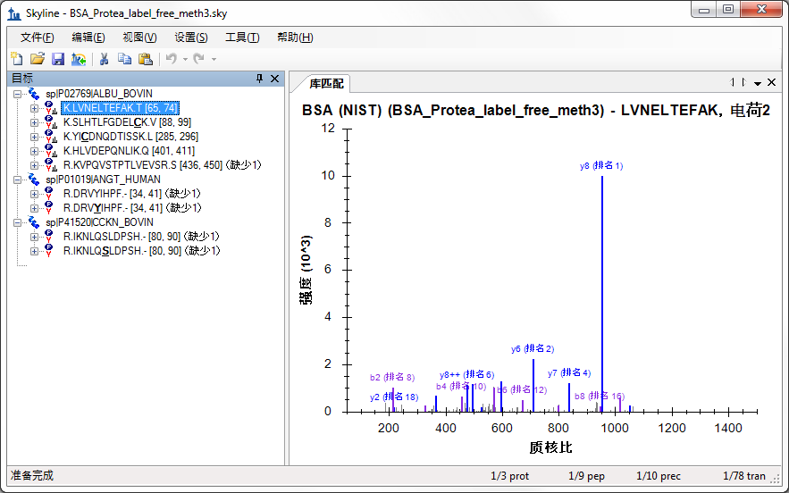
这是一个相对较小的文档。右下角状态栏显示其中包含 10 个母离子、78 个子离子或目标离子对。其中有的母离子具有源自公共 NIST 库的牛血清白蛋白 (BSA)相关 MS/MS谱图库。另外还有两条分别存在非修饰形式和磷酸化修饰形式的肽段（一条为人源肽段，一条为牛源段），但这两条肽段不存在 MS/MS谱图库。
如果您不熟悉如何在 Skyline 中创建这样的文档，可查看多个涵盖各种 Skyline 方法编辑功能的入门教程和教学视频。本教程将假设您熟悉用作靶向蛋白质组方法编辑器的 Skyline，从现有文档入手。
在 Windows Explorer 中，您还将在此 Skyline 文档的同一个“Low Res”文件夹中看到两个 Thermo 原始文件。这些文件包含使用上述靶向 MS/MS 方法在低分辨率 LTQ 仪器上采集的一系列 MS1 和 MS/MS 扫描，方法如下：
您可使用 Skyline 为 Thermo-Scientific、Bruker Daltonik 和 AB SCIEX导出与此类似的靶向 MS/MS 方法。对于 Agilent 仪器和 Thermo Q Exactive，Skyline 可导出称之为采集列表的内容。目前Skyline正在针对 Waters仪器开发方法。在为全扫描仪器导出方法之前，您必须配置全扫描数据分析的文档。
要为本教程提供的 Thermo 原始文件配置当前分析文档，请执行下列步骤：
目前尚未对该文档进行从全扫描数据中提取色谱图的设置。该文档仍将全面支持 SRM 数据，但您需要进行一些修改才能使其导入全扫描数据文件。“全扫描”标签将显示如下：
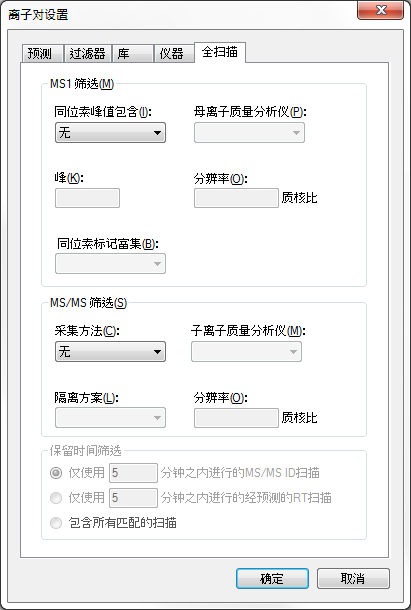
Skyline 需要更多信息才能从全扫描数据中提取色谱图。
此时，“全扫描”标签将显示如下：
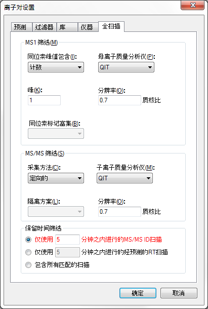
请注意，同时启用 MS1 和 MS/MS 筛选时，所有母离子色谱图将会从 MS1 扫描中被提取出来，而所有碎片离子色谱图从 MS/MS 扫描中被提取出来。如果您想在 MS/MS 扫描中查看母离子的色谱图，需要禁用 MS1 筛选选项。
Skyline 将“保留时间筛选”默认设置为“仅使用 5 分钟之内进行的 MS/MS ID 扫描”，且此设置将突出显示为红色。如果您将鼠标悬停在红色文字上方，则将看到提示“本文档中的谱图库不包含针对此文档中的任何肽段的保留时间。”这是提醒您，尽管此设置旨在缩短提取色谱图的时长，但除非您更改谱图库的内容，否则，由于缺乏有用的 MS/MS ID， Skyline 将不得不在全梯度范围内提取色谱图。然而，您将针对此实验导入源自搜索靶向 MS/MS 扫描的肽段搜索数据。现在执行下列操作，可以缩短色谱图提取时长，即使缩短范围非常有限：
这能够显著减小 Skyline 文件的大小，加快导入时间并改善色谱峰选择。
要确保 MS/MS 库中谱图的匹配与 Skyline 将要提取的色谱图正确对应，需要确保全扫描设置中的 MS/MS 分辨率与库中离子匹配的容忍度窗口相匹配。对于此数据集，请执行下列步骤：
“库”标签将显示如下：
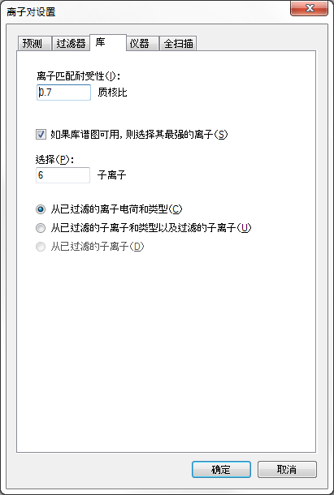
此时，离子匹配窗口与色谱提取窗口相同。这对于高分辨率数据而言可能稍显复杂，因为色谱提取窗口将随着质核比变化。将来，我们希望添加一个复选框来强制两种设置相互匹配，但就目前而言，介于 0.05 和 0.01 之间的值通常最适合高分辨率数据，具体取决于 MS/MS 质量分析仪上的分辨能力设置。
MS1 全扫描设置表明，单同位素母离子峰需从MS1 扫描文件中提取出来，所以您需要确保Sklyine设置文档中包含母离子的离子对条目。通常，执行下列步骤即可：
此时，“过滤器”标签将显示如下：
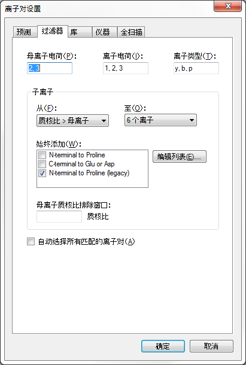
要确保每个肽段母离子条目都包含一个母离子离子对，请执行下列操作：
很遗憾，由于本文档中的所有母离子被手动编辑，这防止了 Skyline 由于“过滤器”标签中的变化而更改离子对。因此，您需要以手动方式添加母离子离子对，如下所示：
此时，表单将显示如下：
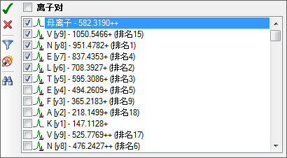
针对文档中的其他 9 个母离子分别重复此步骤。完成这些更改时，重新选择第一个肽。
现在即完成了文档配置，能够与全扫描靶向 MS/MS 数据配合使用。您也可以将其用于为 LTQ 仪器导出靶向 MS/MS 方法。
我们强烈建议您使用仪器控制电脑从 Skyline 文档导出所有方法。这是因为大多数仪器供应商未对其方法编辑软件进行设计，使其能够在其他设置中良好运行，并且 Skyline 必须使用这些供应商提供的库以对您提供的模板方法进行必要的更改。在有些情况下，您可在个人电脑上设置供应商软件，以模拟仪器控制电脑上的环境，但我们不建议这样做。我们建议您在个人电脑上编辑 Skyline 文档，然后将其转移至仪器控制电脑，用于最终的方法导出。
因此，要为当前文档导出 LTQ 方法，首先要将针对 Thermo LTQ的Skyline文档转移至仪器控制电脑，然后执行下列步骤：
“导出方法”表单将显示为：
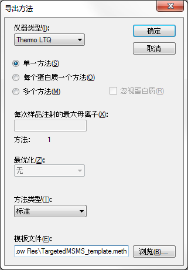
如果在 Thermo LTQ 仪器上实际运行这些步骤，此操作应该会成功，并会创建您指定的新的“TargetedMSMS_BSA_Protea.meth”文件。双击文件，则 LTQ 仪器设置软件将显示如下：
否则，Skyline 将显示以下错误消息：
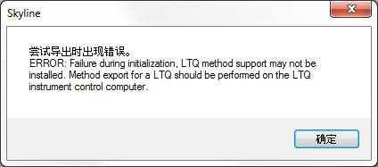
只需单击“确定”按钮即可继续教程的其余部分。类似的步骤对 Thermo LTQ、Bruker TOF 和 AB SCIEX TOF 仪器控制电脑以及Agilent 和 Waters TOF 控制电脑是适用的。或者，对于 Agilent TOF 和 Thermo Q Exactive 仪器，也可以使用“文件”>“导出”>“采集列表”。
然而，在类似小文档中，您应该能够手动创建如上所示方法，因为它只需为本文档中的特定母离子质核比值设置 MS1 扫描和 10 MS/MS 扫描。为此，要生成一个包含母离子质核比值的报告，请执行下列步骤：
此时“编辑报告”表单将显示如下：
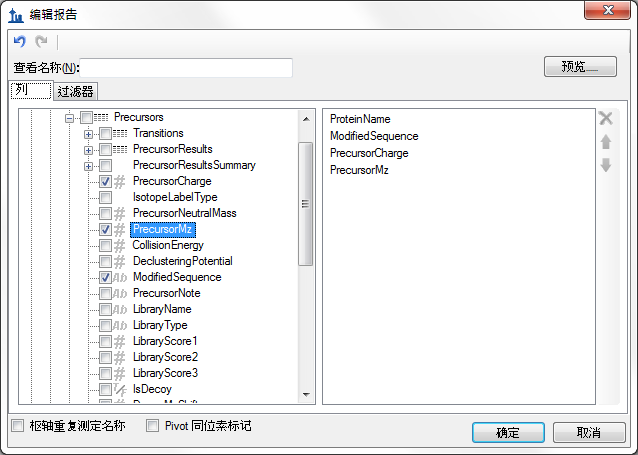
此时“预览报告”表单将显示如下：
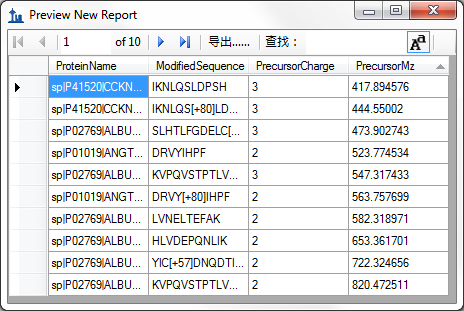
借助此表单中显示的母离子质核比值，可以使靶向 MS/MS 方法设置过程加快，即使在目前缺乏直接方法导出支持的仪器上也是如此。实际上，用于检查数据的原始方法就是通过这种方式建立的。然而需要注意的是，越来越多的靶向 MS/MS（或 PRM）实验变得和 SRM 一样可以按照预先设定的保留时间进行靶向数据采集，因此 Skyline 中的调度算法变得非常宝贵。
要为此文档导入肽段搜索结果和在 Thermo LTQ 上收集的两个原始数据文件，请执行下列步骤：
Skyline 将显示如下向导表单：
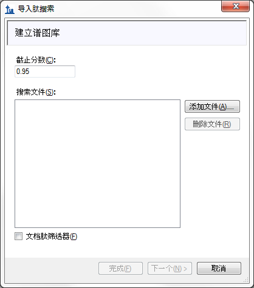
此表单的首页可用于针对您的 Skyline 文档建立一个谱图库。若要现在执行此操作，请执行下列步骤：
此时表单显示如下：
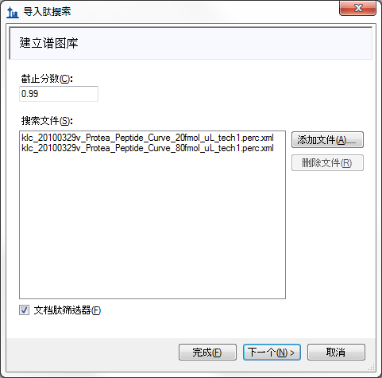
现在，Skyline开始根据靶向 MS/MS数据的 Sequest/Percolator 肽段搜索结果建立谱图库，同时显示进度条。完成此步骤后，Skyline会搜索肽段谱图源文件或 Skyline 文档周围的任何原始数据文件。此时，将找到两个匹配的 Thermo 原始文件。如果无法找到匹配的数据文件，系统将要求您重新找到它们的位置。
向导表单将如下所示，显示 Skyline用于色谱图提取的文件：
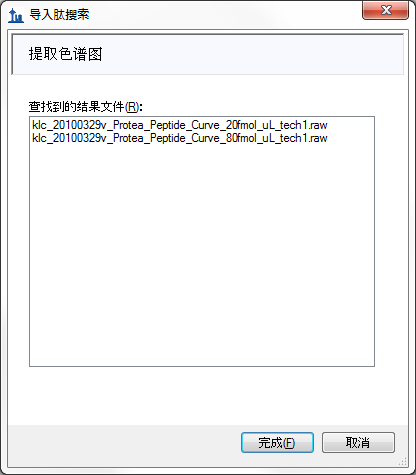
如 MS1 全扫描过滤教程所示，该向导可以设置其他步骤，但是因为文档中已包含肽段修饰和全扫描设置，而且您仅选择那些与本文档相匹配的肽段 ID，因此 Skyline 决定此文档仅执行色谱图提取，不执行其他操作。
文件导入开始，底部 Skyline 窗口的状态栏中将显示进程和“加载色谱图”表单。
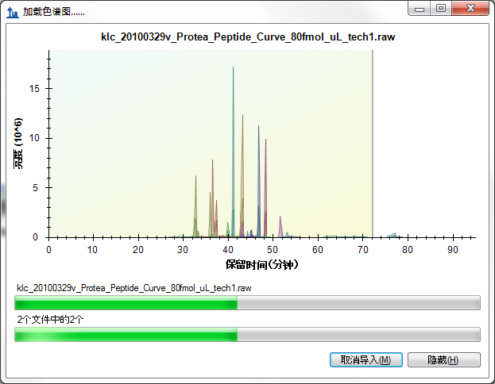
在靶向色谱图提取过程中，您可执行以下操作，为检验提取的色谱图做准备：
导入完成后，Skyline 窗口将显示如下：
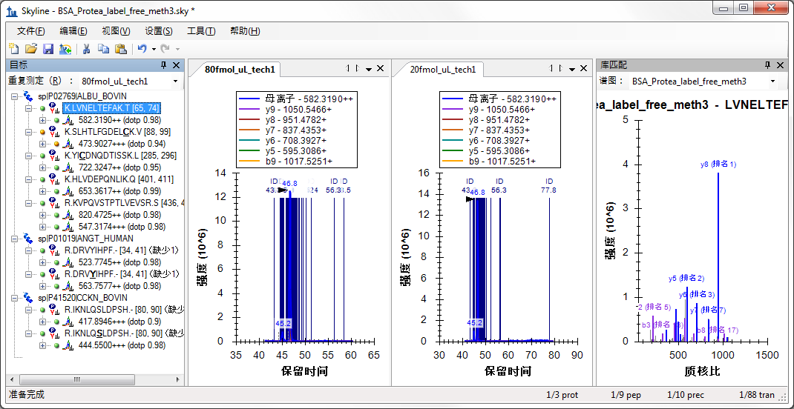
查看此视图中的色谱图可能有些困难，因为谱图 ID 数量较多，这些 ID 全部标注了深蓝色的垂直线、确定谱图的字母“ID”和以分钟为单位的色谱保留时间。所选的色谱峰显示在这些 ID 中间，并带有一个指向其顶点的黑色箭头。
您可能会注意到，色谱峰强度 (1.4 x 107) 看起来与 4:1 稀释的样本的色谱峰强度比较接近。这是因为 BSA 肽段被用作样品中其他两种蛋白质的背景参照。
接下来可以执行以下操作以放大色谱图峰视图：
此操作将使色谱图显示如下：
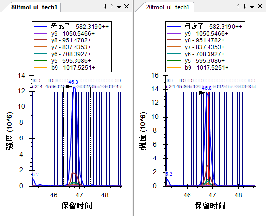
现在，您可以看到一条条竖线，每一条竖线代表一个被鉴定为目标肽段的谱图。仔细观察会发现 20fmol 样品的色谱峰中间有一条红线，这是“匹配库”视图中当前显示的谱图，并且是 BiblioSpec 库构建工具所认为的“最佳谱图”。您可通过单击色谱图中的竖线，或通过单击“匹配库”视图顶部的下拉列表并从谱图时间长列表中进行选择来查看“匹配库”视图中的其他谱图。肽段搜索引擎能够从众多色谱峰中识别包含此肽段的谱图，这点可能令人感到有些惊讶。而且，从整合的色谱峰边界以外的谱图来看，其信噪比是非常低的。
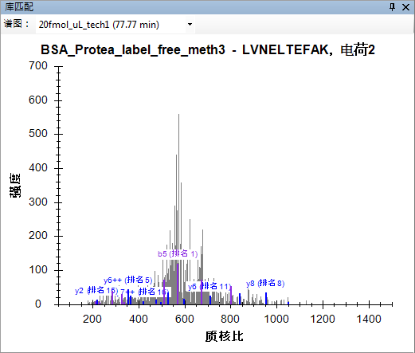
然而，搜索是以包含三种预期蛋白质的Uniprot FASTA为正库，并将其反转作为反库，以未指定酶切种类为参数执行的。
此外，因为检查色谱图时，如此多的肽段 ID 注释可能有些过量：
将您的注意力转移到“目标”视图，此时会看到所有目标肽均有匹配的 MS/MS 谱图，并在右下角显示带有小谱图的图标  。您会看到 0.84 为最低点积分数（标有“点积”），其为母离子“417.8946+++ (dotp
0.84)”提供测定的子离子峰面积和谱图库中片段离子强度之间的相关分数。“目标”视图仅显示当前活动的测定“20fmol_ul_tech1”的点积分数。您可区分活动的重复测定，因为其标签文本是黑体，可从“目标”视图顶部的下拉列表中选择。可通过单击“80fmol_ul_tech1”的色谱图，或在下拉列表中选择它来查看“80fmol_ul_tech1”的点积分数。
。您会看到 0.84 为最低点积分数（标有“点积”），其为母离子“417.8946+++ (dotp
0.84)”提供测定的子离子峰面积和谱图库中片段离子强度之间的相关分数。“目标”视图仅显示当前活动的测定“20fmol_ul_tech1”的点积分数。您可区分活动的重复测定，因为其标签文本是黑体，可从“目标”视图顶部的下拉列表中选择。可通过单击“80fmol_ul_tech1”的色谱图，或在下拉列表中选择它来查看“80fmol_ul_tech1”的点积分数。
要同时查看所有重复测定的信息，请执行下列操作：
“峰面积”图将显示如下：
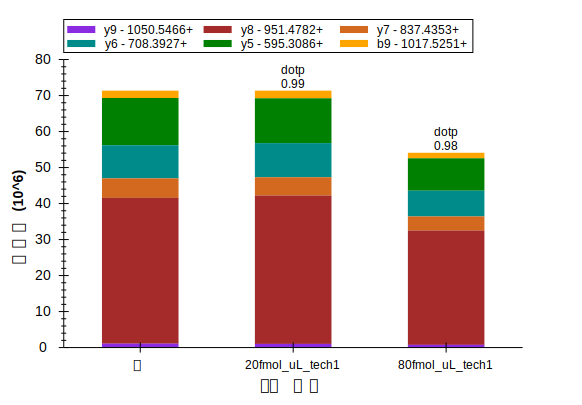
如果未能如此显示，您可能仍需执行以下某个步骤：
您可查看具有这些设置的所有目标肽，可以看到他们与搜索谱图非常匹配，并且样品中 BSA 肽的浓度保持相对恒定。一些 BSA 肽段在 20 fmol 样品中显示更高的峰面积，而有些肽段则在 80 fmol 样品中显示更高的峰面积，这是由于测量存在一定的误差。对于5 个浓度稀释点，上述肽段LVNELTEFAK的峰面积图显示如下：
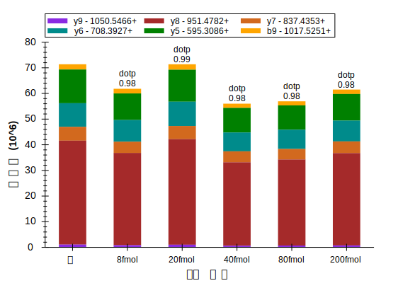
接下来，对于人类肽段 DRVYIHPF，您可以在其中看到由样品名 80 fmol 和 20 fmol 所表示的 4:1 浓度比率的测定结果。为了更好地查看 Skyline 的分析结果，请执行以下步骤：
“峰面积”图显示如下：
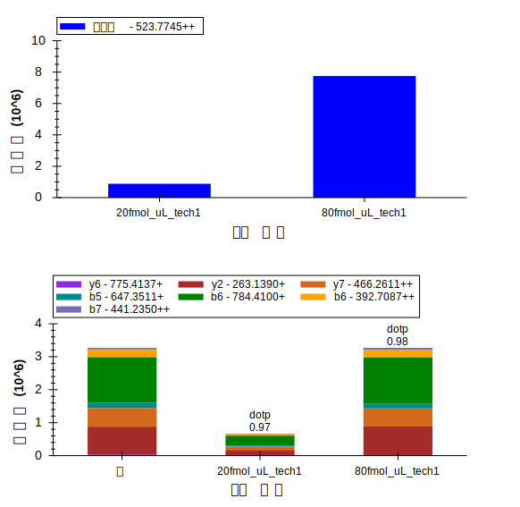
80 fmol 子离子峰面积之和约为 3 x 106，20 fmol 子离子峰面积之和约为 0.7 x 106，接近预期 的4:1 的比例，但对于从 MS1 提取的母离子而言，80 fmol 面积约为 6 x 106，20 fmol 面积接近 4 x 106 ，其比例约为3:2 。我们来看一下色谱图，以检查出现比例差异的来源。
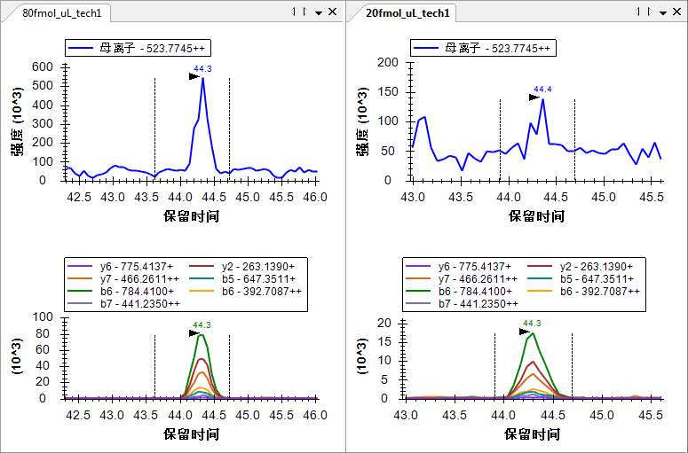
通过单击并拖至下部图形的 x 轴下方，将 20 fmol 重复测定的峰图边界重置，您将看到子离子的峰面积不会有太大变化，但母离子的峰面积会降至约 0.8 x 106，特别接近于 80 fmol 峰面积的 ¼。仍然值得注意的是，子离子色谱图比从 MS1 中提取的色谱图的噪音少得多。来自 MS/MS 的子离子色谱图比来自相同分辨率的 MS1 的母离子色谱图更具选择性。
此时查看其余4 种肽，则不出所料，所有 4 种肽在 80 fmol 和 20 fmol 样品之间的强度比约为 4:1。（数据为从稀释系列选择的两个点。出于对文件大小的考虑，本教程中只包括了两个点。）
此数据和其他实验表明，低分辨率 LTQ完全可以进行MS/MS 扫描并提取片段离子的色谱图而进行定量分析。1
您还可以执行以下操作，来对比各重复测定的相对离子丰度：
在此模式中，您可重新查看文档中的所有肽，您将看到重复测定之间片段离子的相对丰度非常相似，并且与谱图库中片段离子的强度也极为相似。
R.IKNLQSLDPSH.- [80, 90] K.HLVDEPQNLIK.Q [401, 411]
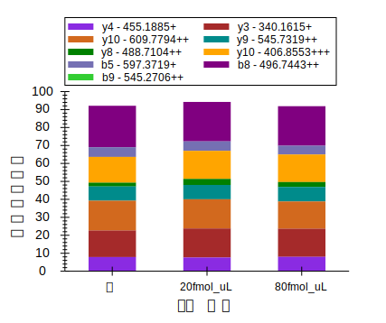 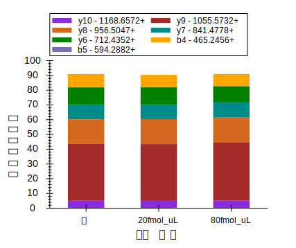
本教程所涉及的另一个数据是BSA酶解肽段进行一系列稀释并由Agilent 6500 Q-TOF 测量所得的数据集。虽然 Skyline同样适用于轮廓扫描，但为了保证本教程下载的数据足够小，因而对高分辨率扫描中的所有谱峰采用重心格式。
接下来开始使用此 Q-TOF 数据。请保存您正在处理的文件并打开所创建教程文件夹的“TOF”子文件夹中的“BSA_Agilent.sky”文件。
此外，这是针对“TOF”文件夹中包含的原始数据文件的完整 Skyline 文档，但其当前设置仅允许导入 SRM 数据。如果您在此尝试导入任何全扫描数据文件，则系统将出现以下错误消息：
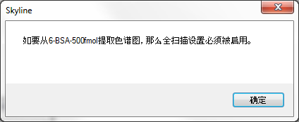
如果您确实尝试了该操作，则请使用撤销 (ctrl-Z) 将文档恢复至原始状态。
您可调整文档设置，通过执行以下操作使其与在本教程数据文件中的靶向 MS/MS 实验兼容：
此时，“全扫描”标签将显示如下：
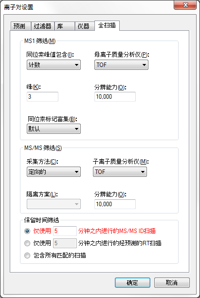
对于此数据集，没有要导入的肽段搜索结果。导入任何数据之前，您也无法预测肽段的洗脱保留时间。由于缺乏 MS/MS ID，如果按照这样的设置，Skyline 将在全梯度范围内提取色谱图。您也可通过执行以下操作明确选择此项：
Skyline会将此选项显示为红色。如果您将鼠标光标悬停在红色文本上方，则将看到提示“全梯度色谱图将花费更长的时间来导入、占用更多磁盘空间，并且可能导致峰选择不太有效。”但是，在这种情况下您别无选择，只能针对一个文件使用此设置。
此数据集还包括 MS1 扫描，但文档中同样不包括母子离子对。添加母子离子对的步骤：
此时，“过滤器”标签将显示如下：
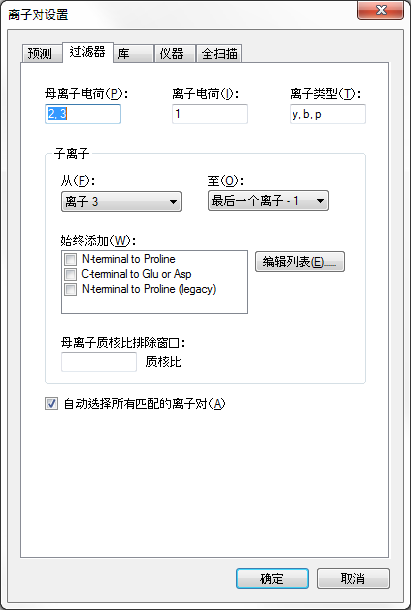
要确保此时每个肽段母离子项包含母子离子对，请执行以下操作：
此时，您将看到所有肽段包含 3 个母离子对（M、M+1 和 M+2）。只有高分辨率 MS1 扫描才可能出现这种情况。界面将显示如下：
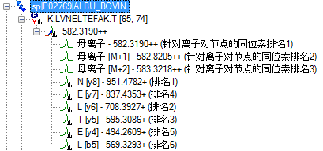
因为未手动编辑肽，它们均处于自动选择模式，因此将自动添加离子对。
Skyline 正在使用正交排名排列母离子同位素峰（针对离子对节点的同位素排名）和子离子峰（排名）。母离子同位素峰根据预期的同位素分布进行排列。子离子峰则按照其在匹配库谱图中的相对强度排列。
通过执行下列步骤，将稀释系列中的最高浓度数据导入本文档：
在提取靶向色谱图过程中，您可执行以下操作，准备查看提取的色谱图：
导入完成后，Skyline 窗口将显示如下：
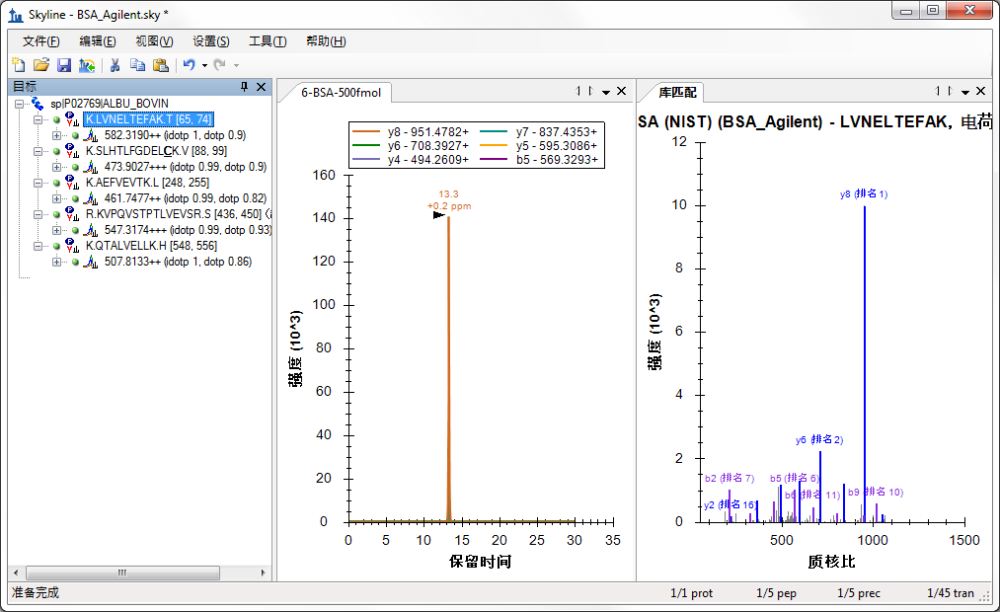
首先，您应注意到，色谱图中的色谱涵盖了整个 30 分钟的梯度。
将“肽”视图放大，您可看到此时已为母离子同位素分布和子离子强度分别添加了两个正交点积值：同位素点积和点积。这些值表明最高浓度数据中肽段色谱峰与预期的相对强度之间良好的相关性。
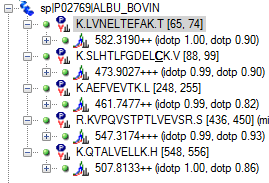
为了避免为其他 5 个浓度点导入全梯度色谱图，请执行下列操作：
“肽段设置”表单如下所示：
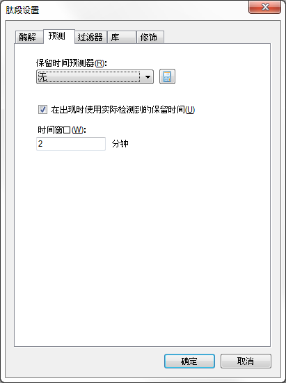
“离子对设置”表单将显示如下：
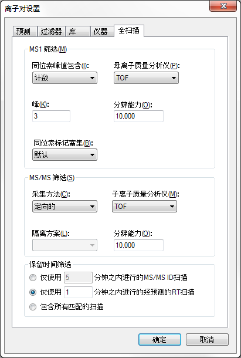
要从此数据集中导入剩余的原始数据文件，请执行下列操作：
数据导入后，或正在导入时，执行下列操作以排列色谱图：
此时，色谱图将显示如下：
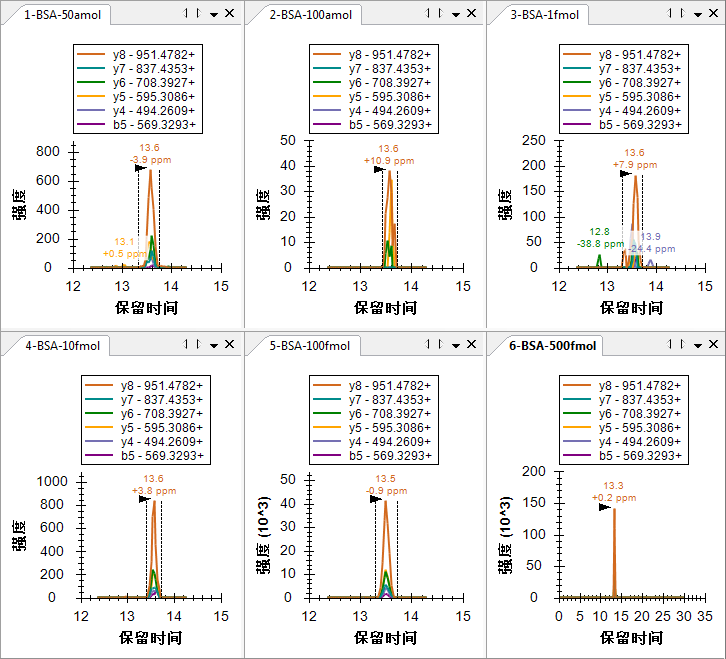
您会看到新导入的色谱图的长度仅为 2 分钟，而 6-BSA-500fmol 色谱图仍长达 30 分钟。若要放大所有图形上的所选峰值，请执行下列操作：
该操作将使色谱图显示如下：
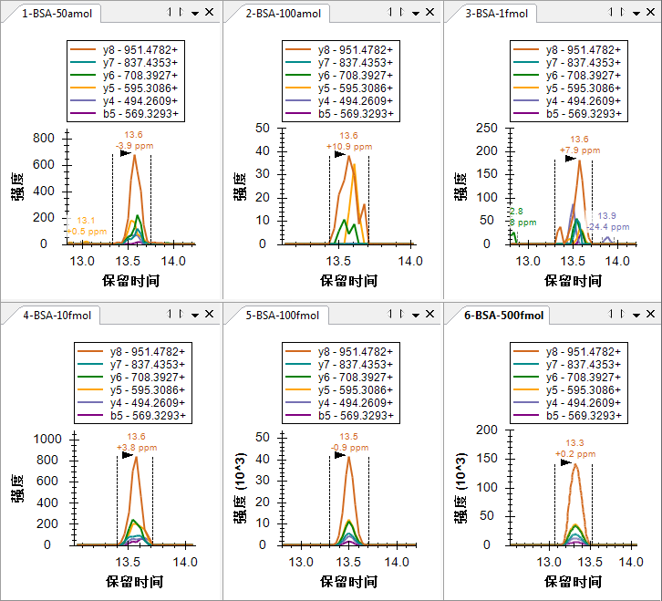您可能会发现，在 6 个色谱图中，50 amol 的样品强度更大 (700)，比 100 amol 样品 (40) 形成的峰图更佳。所有峰值的保留时间都非常相似，因此发生这种情况的原因不大可能是 Skyline 选择了错误的 100 amol 峰值。另外请注意，对于高分辨率数据，Skyline 在峰保留时间注释下方显示了一个质量误差值，表示预期质核比值和峰值中各点加权平均值之间的差异。上图显示的整体趋势相当不错，较高强度的数据倾向于比较低强度的数据更加精确，这可能是由于噪声引起的强度变化比例造成的。
您可通过执行下列操作更加深入地了解 50 amol 样品的强度方面的问题：
此操作将使“峰面积”图显示如下：
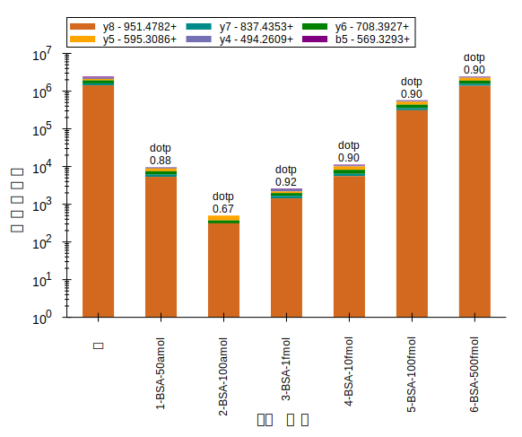
在此视图中，50 amol 样品似乎比 100 amol 样品更加接近10 fmol 样品。如果查看其他 4 个肽，您将发现在（SLHTLFGDELCK 和 KVPQVSTPTLVEVSR）两个肽中，50 amol 样品的总峰值强度实际大于 10 fmol 样品，不过另外两个峰值较小。显然，此样品的浓度实际并不是 50 amol。反应介于 10 fmol 和 100 fmol 之间的两个肽给人的印象是其实际浓度介于这些浓度之间，但在这种情况下其他 3 个肽较弱。
值得检查的另一件事情为样品实际是否是以数字前缀 (1, 2, 3 … 6) 显示的顺序进行测定的。要完成此检查，请执行下列步骤：
您将看到图形不会发生变化，这意味着样品确实是以指示顺序采集的。为了减少交叉污染带来的影响，这种响应曲线通常是从最低浓度到最高浓度采集的。
通过 Skyline，您可以非常快速地深入了解浓度曲线数据的质量。
作为最后的验证步骤，您可能需要查看经 MS1 筛选的母离子峰值，以查看它们是否相似。要查看 MS1 峰值，请执行下列步骤：
此时，色谱图将显示如下：
K.LVNELTEFAK.T (500 fmol)
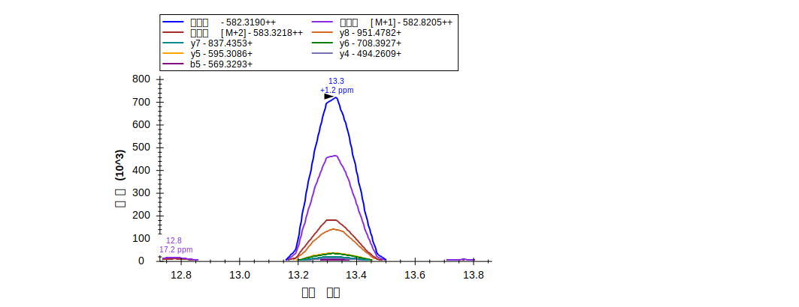
如以前一样，您可查看最强的子离子 (y8)，其达到了单同位素母离子强度的 1/5 (1.4 x 105 v.7.2 x 105)，而即使 M+2 峰值也比 y8 峰值更强。
要单独查看母离子峰值，请执行下列步骤：
此操作后Skyline 应显示如下：
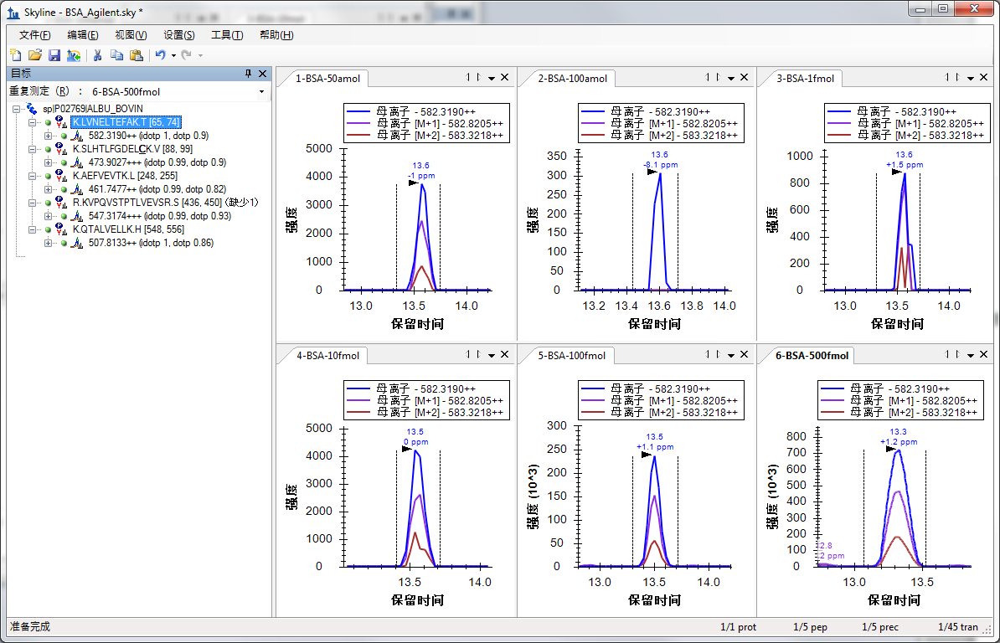
“峰面积”图将显示如下：
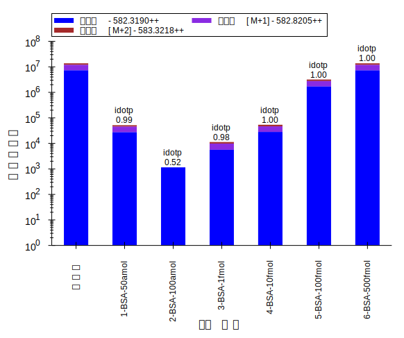
此时再次分别查看这 5 个肽段，可以发现各浓度点的相对强度与通过子离子比较得到的强度非常相似。
在本教程中，您学习了如何设置 Skyline 文档以执行靶向 MS/MS 实验。这将使您能够在全扫描仪器（如离子阱和 Q-TOF 仪器）上执行类似 SRM 的实验。您也可使用此技术在全扫描仪器上定期进行系统适用性、质量控制或诊断测试。您学会了如何导出目前适用于 Thermo 和 AB SCIEX仪器的靶向 MS/MS 方法，尽管不是按时间表检测法；您还学会了如何使用 Skyline 报告获取适用于那些目前尚不支持方法导出的仪器的目标母离子质核比值列表。您已经学会如何导入本地结果文件，甚至学会如何从这些文件中可能包括的 MS1 扫描中提取色谱图。导入后，将出现一些新的注释，如所含 MS1 扫描的针对离子对节点的同位素排名和同位素分布点积，并且您可以选择仅查看MS1 或 MS/MS 扫描中的信息。否则，Skyline 提供用以帮助您理解数据的色谱图、摘要图和报告应从三重四级杆 SRM 实验或教程进行熟悉了解。
1. Stacy D. Sherrod et al.Label-Free Quantitation of Protein Modifications by Pseudo-Selected Reaction Monitoring with Internal Reference Peptides.J. Proteome Res. (submitted)
2. Schilling, B. et al.Platform Independent and Label-Free Quantitation of Proteomic Data Using MS1 Extracted Ion Chromatograms in Skyline.Application to Protein Acetylation and Phosphorylation.Mol Cell Proteomics (2012).doi:10.1074/mcp.M112.017707